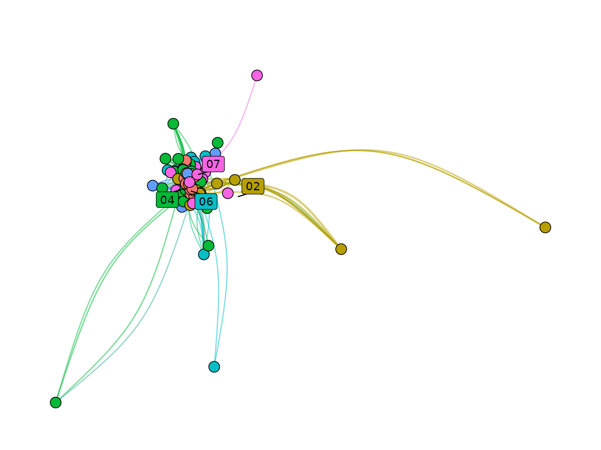

Presentation of networkflow
Source:vignettes/networkflow_presentation.Rmd
networkflow_presentation.RmdIntroduction
Overview
networkflow provides a complete workflow to build,
structure, and explore networks from tabular data.
Its key feature is a built-in dynamic analysis workflow: the package can build networks across time windows, detect clusters in each window, and link clusters across periods to track their evolution.
More broadly, networkflow supports the full analysis
pipeline, from network construction to interpretation and visualization,
including clustering, layout and color preparation, static plotting, and
interactive exploration with a Shiny app.
The package was developed with projected networks in mind (for
example, article -> reference), but it can also be used more
generally once data are represented as tbl_graph
objects.
What this package does
The package is organized in three main steps:
- create networks (static or dynamic) from tabular data;
- detect and harmonize clusters across time windows;
- prepare visualization and exploration outputs (layout, colors, labels, plotting, Shiny app).
Typical workflow
A typical workflow is:
- prepare
nodesanddirected_edgestables; - build the network with
build_network()(orbuild_dynamic_networks()for temporal analyses); - detect clusters with
add_clusters(); - prepare plotting attributes (
layout_networks(),color_networks()); - inspect and interpret results with plots and
launch_network_app().
Data Requirements
Network objects: tbl_graph
A tbl_graph is the core network object
in networkflow.
It comes from tidygraph and stores:
- a node table (attributes of entities);
- an edge table (connections between entities).
Most functions in this package take a tbl_graph (or a
list of tbl_graph) as input. In practice,
build_network() and build_dynamic_networks()
are the main entry points that create these objects from tabular
data.
networkflow expects tabular inputs with explicit
identifiers:
-
nodes: one row per source entity (for example, one row per article), with a unique ID used assource_id; -
directed_edges: links fromsource_idtotarget_id(for example, article -> reference, author -> paper); -
time_variable: required only for dynamic analyses withbuild_dynamic_networks().
Input of build_network() and
build_dynamic_networks()
build_network() and
build_dynamic_networks() are the main entry points to
create tbl_graph objects in the package. They start from a
bipartite relation (source_id -> target_id)
and produce a one-mode weighted network on source_id
entities. The bipartite relation is a table of directed edges from
source to target entities (for example, article -> reference, author
-> paper). After projection, the result is a one-mode network.
If your data is already one-mode (for example, author -> author),
you can build a tbl_graph directly and use downstream
functions for clustering, layout, plotting, and exploration. Typical
downstream functions in this case are add_clusters(),
layout_networks(), color_networks(), and
launch_network_app().
Step 1: Creating networks
Functions used:
This step creates one static network (tbl_graph) or a
list of temporal networks (list of tbl_graph)
from bipartite links (source_id -> target_id).
build_network() is the single-network wrapper around
build_dynamic_networks().
build_network() and
build_dynamic_networks()
build_dynamic_networks() builds one network or a list of
time-window networks if the user provides a temporal variable.
build_network() is the wrapper for one network of
build_dynamic_networks(time_variable = NULL).
build_dynamic_networks() supports two different filtering
strategies:
build_dynamic_networks() takes as input a bipartite
relation and projects it into a one-mode network. It supports two
different filtering strategies for edge retention after projection:
- a structured strategy, which defines edge strength using measures derived from co-occurrence intensity;
- a statistical strategy, which defines a null model of random co-occurrence and keeps edges based on statistical significance.
In short, the first approach defines and filters by observed tie
strength, while the second defines and filters by statistical
significance. The structured method is generally more computationally
efficient, while the statistical method provides a more rigorous filter
for connections beyond random chance. For example, if
source_id is article and target_id is
reference, the structured method will keep article pairs with strong
co-citation or bibliographic coupling, while the statistical method will
keep article pairs whose co-citation or bibliographic coupling is
significantly stronger than expected under a random model.
Parameters common to both methods:
-
nodes: table with one row per source entity defined bysource_id. -
directed_edges: table with directed edges fromsource_idtotarget_id. -
source_id,target_id: identifier columns used for projection. -
projection_method:"structured"or"statistical". -
compute_size: ifTRUE, computesnode_size. -
keep_singleton: ifFALSE, removes isolated nodes.
Structured-only parameters
(projection_method = "structured")
- uses cooccurrence/coupling measures from the
biblionetworkpackage. -
cooccurrence_method:"coupling_angle","coupling_strength","coupling_similarity". -
edges_threshold: minimum edge strength retained.
Statistical-only parameters
(projection_method = "statistical")
- uses statistical backbone extraction (
backbonepackage). -
model:"sdsm","fdsm","fixedfill","fixedrow","fixedcol". -
alpha: significance threshold for edge retention. -
backbone_args: additional arguments passed to backbone routines.
Dynamic-only parameters (build_dynamic_networks()):
-
time_variable: temporal column innodes(for example publication year). -
time_window: width of each window. -
overlapping_window: rolling windows (TRUE) or disjoint windows (FALSE). In the first case, partition is done by rolling the time window by one unit (for example, 1990-2009, 1991-2010, etc.). In the second case, partition is done by fixed intervals (for example, 1990-1999, 2000-2009, etc.).
The main output of these functions is a tbl_graph (or a
list of tbl_graph for dynamic analyses). If
projection_method = "structured", the output edges are
weighted by the selected cooccurrence/coupling measure. If
projection_method = "statistical", the output edges are
unweighted and retained based on statistical significance.
Examples:
library(networkflow)
nodes <- subset(Nodes_stagflation, source_type == "Stagflation")
references <- Ref_stagflation
g_static <- build_network(
nodes = nodes,
directed_edges = references,
source_id = "source_id",
target_id = "target_id",
projection_method = "structured",
cooccurrence_method = "coupling_similarity",
edges_threshold = 1,
compute_size = FALSE,
keep_singleton = FALSE
)
g_dynamic <- build_dynamic_networks(
nodes = nodes,
directed_edges = references,
source_id = "source_id",
target_id = "target_id",
time_variable = "source_year",
time_window = 20,
projection_method = "structured",
cooccurrence_method = "coupling_similarity",
edges_threshold = 1,
overlapping_window = TRUE,
compute_size = FALSE,
keep_singleton = FALSE
)
g_dynamic_stat <- build_dynamic_networks(
nodes = nodes,
directed_edges = references,
source_id = "source_id",
target_id = "target_id",
time_variable = "source_year",
time_window = 20,
projection_method = "statistical",
model = "sdsm",
alpha = 0.05,
overlapping_window = TRUE,
compute_size = FALSE,
keep_singleton = FALSE
)
filter_components()
Use filter_components() to keep the main connected
component(s):
-
nb_components: number of largest components to keep. -
threshold_alert: warning threshold when a removed component is still large. -
keep_component_columns: keep or remove helper columns on component IDs and sizes.
g_static <- filter_components(g_static, nb_components = 1)Step 2: Clustering
Functions used:
add_clusters()
Run community detection on a static or dynamic network. The function
is a wrapper around tidygraph::group_graph(). It also
supports the igraph implementation of the Leiden algorithm,
which is the default method.
Main parameters:
-
clustering_method: the clustering algorithm to use. -
weights: edge weight column usage. -
objective_function,resolution,n_iterations: Leiden controls. -
seed: reproducibility for stochastic algorithms.
The output is a tbl_graph (or a list of
tbl_graph) with new columns: - node column
cluster_{method}. - edge columns
cluster_{method}_from, cluster_{method}_to,
cluster_{method}. - node column
size_cluster_{method} with cluster shares.
Example:
g_static <- add_clusters(
graphs = g_static,
clustering_method = "leiden",
objective_function = "modularity",
resolution = 1,
n_iterations = 1000,
seed = 123
)## ℹ The leiden method detected 7 clusters. The biggest cluster represents "36.1%" of the network.
g_dynamic <- add_clusters(
graphs = g_dynamic,
clustering_method = "leiden",
objective_function = "modularity",
resolution = 1,
n_iterations = 1000,
seed = 123
)
merge_dynamic_clusters()(dynamic only)
add_clusters() runs independently on each time window,
so cluster IDs are not directly comparable across windows.
merge_dynamic_clusters() links clusters from adjacent
windows when node overlap is high enough, and assigns stable
intertemporal IDs.
Input requirements:
-
list_graphmust be a list of at least twotbl_graph. - the list order must be chronological (oldest to most recent window).
Main parameters:
-
cluster_id: input cluster column (for examplecluster_leiden). -
node_id: stable node identifier across windows. -
threshold_similarity: matching threshold in(0.5, 1]. -
similarity_type:"complete"or"partial".
similarity_type controls how overlap is computed:
-
"complete": the overlap share is computed over all nodes in the compared clusters, including entries that exist only in one window. This is stricter when network size changes over time. -
"partial": the overlap share is computed only on nodes present in both adjacent windows. This is often preferable when many new nodes enter over time.
Output:
- new node column
dynamic_{cluster_id}(for exampledynamic_cluster_leiden). The dynamic cluster IDs are assigned by propagation: it starts by assigning unique IDs to clusters in the first time window, then propagates those IDs to later windows when a cluster match passes the similarity threshold; otherwise, a new dynamic ID is created. - corresponding edge columns
dynamic_{cluster_id}_from,dynamic_{cluster_id}_to, anddynamic_{cluster_id}.
g_dynamic <- merge_dynamic_clusters(
list_graph = g_dynamic,
cluster_id = "cluster_leiden",
node_id = "source_id",
threshold_similarity = 0.51,
similarity_type = "partial"
)
name_clusters()
Cluster IDs are not very informative in themselves.
name_clusters() helps assign readable labels to clusters
based on their content. The labels are not meant to be definitive
cluster names, but rather a quick way to get a sense of cluster content.
The function supports three methods:
-
method = "tf-idf": labels clusters with the most distinctive terms extracted from atext_columns. This is usually the best default for thematic interpretation. -
method = "given_column": selects, within each cluster, the node with the highest value inorder_by, then builds the label fromlabel_columnsof that node. Typically, you can use this method to label clusters with the title of a representative article (for example the most cited one). -
method = "tidygraph_functions": computes a centrality measure withtidygraph_function, selects the most central node per cluster, then builds the label fromlabel_columns.
Main parameters:
-
method:"tidygraph_functions","given_column", or"tf-idf". -
name_merged_clusters:TRUEto name dynamic clusters across the list. Typically, you want to set this toTRUEwhen yourcluster_idis the dynamic cluster column created bymerge_dynamic_clusters(). -
cluster_id: column to name. -
label_name: output label column name ("cluster_label"by default). -
text_columns,nb_terms_label: key arguments for TF-IDF naming.
g_dynamic <- name_clusters(
graphs = g_dynamic,
method = "tf-idf",
name_merged_clusters = TRUE,
cluster_id = "dynamic_cluster_leiden",
text_columns = "source_title",
nb_terms_label = 3
)
add_node_roles()
Nodes in a cluster can play different structural roles.
add_node_roles() implements the Guimera-Amaral
classification of node roles based on two measures: within-module degree
(z-score) and participation coefficient. Use
add_node_roles() after clustering to classify nodes
according to their structural position in modules (within-module degree,
participation coefficient, Guimera-Amaral roles). This helps distinguish
peripheral nodes, connectors, and hubs.
Main parameters:
-
module_col: cluster/module column used to compute roles. -
weight_col: edge weight column. -
z_threshold: hub threshold for within-module z-score.
Main outputs:
-
within_module_degree. -
within_module_z. -
participation_coeff. -
role_ga.
g_static <- add_node_roles(
graphs = g_static,
module_col = "cluster_leiden",
weight_col = "weight",
z_threshold = 2.5
)
extract_tfidf()
Use extract_tfidf() to characterize cluster content from
textual metadata (for instance titles, abstracts, or keywords). In a
static network, cluster IDs are usually unique within the graph, so
grouping_across_list = FALSE. Main parameters:
-
text_columns: one or more text fields used to extract ngrams. -
grouping_columns: document units for TF-IDF (for example cluster IDs). -
grouping_across_list: helps disambiguate group IDs across windows. -
n_gram: maximum n for ngrams. -
clean_word_method:"lemmatize","stemming","none". -
ngrams_filter: remove terms that are too rare globally. -
nb_terms: number of top terms returned per group.
tfidf_static <- extract_tfidf(
data = g_static,
text_columns = "source_title",
grouping_columns = "cluster_leiden",
grouping_across_list = FALSE,
n_gram = 2,
nb_terms = 5
)Step 3: Plot networks
Functions used:
layout_networks()minimize_crossing_alluvial()color_networks()prepare_label_alluvial()prepare_label_networks()plot_alluvial()plot_networks()launch_network_app()
layout_networks()
Compute node coordinates before plotting. The function is a wrapper
around ggraph::ggraph() and supports all its layout
algorithms. For dynamic networks, coordinates are computed sequentially
by window: the first window is computed with the selected layout, then
subsequent windows are computed by reusing prior coordinates when
compute_dynamic_coordinates = TRUE.
Main parameters:
-
node_id: unique node ID column used to join coordinates. -
layout: layout algorithm accepted byggraph::create_layout(). -
compute_dynamic_coordinates: reuse prior window coordinates. -
save_coordinates: ifTRUE, saves coordinates in node columns{layout}_xand{layout}_y(for examplekk_x,kk_y). Typically, you want to set this toTRUEwhen testing different layouts for plotting.
The output is a tbl_graph (or list of
tbl_graph) with new node columns {layout}_x
and {layout}_y or x and y if
save_coordinates = FALSE.
Example:
g_static <- layout_networks(
graphs = g_static,
node_id = "source_id",
layout = "kk"
)
g_dynamic <- layout_networks(
graphs = g_dynamic,
node_id = "source_id",
layout = "fr",
compute_dynamic_coordinates = TRUE
)
color_networks()
Assign colors to nodes and edges based on a categorical attribute
column_to_color present in the node table. Typically, it is
used to color clusters from add_clusters(). The function
supports various color input formats: a named vector of colors with a
length equal to the number of unique categories in
column_to_color, a data frame mapping categories to colors.
If color = NULL, the function generates a color palette
automatically.
Main parameters:
-
column_to_color: node attribute used to define categories to color. -
color: : a palette or a two-column data frame mapping categories to colors. -
unique_color_across_list: for dynamic networks only. It controls whether the same value ofcolumn_to_colorin different time windows should receive the same color. If set toFALSE, the same categorical variable will be considered as the same variable in different graphs. If set toTRUE, the same categorical variable will be considered as a different variable in different graphs and thus receive a different color.
Output:
- node column
color. - edge column
colorcomputed as a mix of source and target node colors.
g_static <- color_networks(
graphs = g_static,
column_to_color = "cluster_leiden",
color = NULL
)## ℹ unique_color_across_list has been set to FALSE. There are 7 different categories to color.## ℹ color is neither a vector of color characters, nor a data.frame. We will proceed with base R colors.## ℹ We draw 7 colors from the ggplot2 palette.
prepare_label_networks()
Create label coordinates (label_x, label_y)
for the label positioning in network plots. The function computes the
average coordinates of nodes within each cluster to position the
label.
Main parameters:
-
x,y: coordinate columns used to compute label centers. -
cluster_label_column: column used for grouping and label text.
g_static <- prepare_label_networks(
graphs = g_static,
x = "x",
y = "y",
cluster_label_column = "cluster_leiden"
)The output is a tbl_graph (or list of
tbl_graph) with new node columns label_x and
label_y for label coordinates.
plot_networks()
plot_networks() builds a ready-to-use network
visualization from graph attributes (coordinates, colors, labels). For
exploration and analysis, we strongly encourage to use
launch_network_app() for interactive exploration.
It requires node coordinates (x, y) and a cluster label column.
Colors must either already exist or be generated by setting
color_networks = TRUE. The user can also customize the plot
by setting print_plot_code = TRUE, which prints the
generated ggplot/ggraph code for manual adjustments.
Main parameters:
-
x,y: node coordinates. -
cluster_label_column: displayed cluster labels. -
node_size_column: node size variable (NULLor missing column gives constant size). -
color_column: color column for nodes and edges. -
color_networks: ifTRUE, appliescolor_networks()automatically withcluster_label_columnas grouping variable. -
color: optional palette passed tocolor_networks()whencolor_networks = TRUE. -
print_plot_code: ifTRUE, prints the generated ggplot/ggraph code for manual customization.
Automatic behavior:
- if label coordinates are missing,
prepare_label_networks()is called automatically. - if edge weights are missing, a constant weight of
1is used. - if
node_size_columnis missing, a constant node size of1is used.
The output is a ggplot object. For dynamic analyses, the function
returns a list of ggplot objects (one per time window) stored in the
$plot column of each list element.
plot_networks(
graphs = g_static,
x = "x",
y = "y",
cluster_label_column = "cluster_leiden",
node_size_column = NULL,
color_column = "color"
)
launch_network_app()
launch_network_app() extends
plot_networks() by providing an interactive Shiny interface
for network exploration. It launches a local app with an interactive
network view. Users can click on clusters to display a table with
selected metadata and adjust visual settings (node size, edge width,
labels, edge visibility) to improve readability. For example, for a
coupling network, the application allows users to explore article-level
information in each cluster.
The app expects a tbl_graph (or a list of
tbl_graph for dynamic analysis), cluster identifiers, and
metadata columns to display. If the input is a list, the app shows a
dropdown menu to select the graph by list name (typically time windows
when graphs are built with build_dynamic_networks()).
Main parameters:
-
cluster_id: node cluster column used for interaction. -
cluster_information: node metadata columns shown in the table (for examplec("source_author", "source_title", "source_year")), present in node data. -
node_id: unique node ID. -
node_tooltip: optional node tooltip column for hover information. -
node_size: optional node size column. -
color: optional color column (color_networks()is applied ifNULL). -
layout: layout algorithm available inlayout_networks(). IfNULL, the function assumes layout coordinates already exist in node columnsxandy.
launch_network_app(
graph_tbl = g_static,
cluster_id = "cluster_leiden",
cluster_information = c("source_author", "source_title", "source_year", "source_journal"),
node_id = "source_id",
node_tooltip = "source_label",
node_size = NULL,
color = "color",
layout = NULL
)End-to-end executable example
The chunk below runs a complete static workflow on bundled data: network construction, clustering, layout, coloring, label preparation, and plotting.
set.seed(123)
# 1) Input tables
nodes_ex <- subset(Nodes_stagflation, source_type == "Stagflation")
references_ex <- Ref_stagflation
# 2) Build network
g_pipeline <- build_network(
nodes = nodes_ex,
directed_edges = references_ex,
source_id = "source_id",
target_id = "target_id",
projection_method = "structured",
cooccurrence_method = "coupling_similarity",
edges_threshold = 1,
keep_singleton = FALSE
)
# 3) Cluster
g_pipeline <- add_clusters(
graphs = g_pipeline,
clustering_method = "leiden",
objective_function = "modularity",
resolution = 1,
n_iterations = 1000,
seed = 123
)
# 4) Prepare plot attributes
g_pipeline <- layout_networks(g_pipeline, node_id = "source_id", layout = "kk")
g_pipeline <- color_networks(g_pipeline, column_to_color = "cluster_leiden")
g_pipeline <- prepare_label_networks(
g_pipeline,
x = "x",
y = "y",
cluster_label_column = "cluster_leiden"
)
# 5) Quick checks on generated attributes
head(
g_pipeline %>%
tidygraph::activate(nodes) %>%
as.data.frame() %>%
subset(select = c(source_id, cluster_leiden, size_cluster_leiden, x, y, color, label_x, label_y))
)## source_id cluster_leiden size_cluster_leiden x y color
## 1 96284971 01 0.36054422 -0.08641510 0.2635816 #F8766D
## 2 37095547 02 0.08163265 0.40394033 0.2124444 #B79F00
## 3 46282251 02 0.08163265 0.78941149 0.2669452 #B79F00
## 4 214927 03 0.02721088 -0.02780195 0.1574541 #9E9E9E
## 5 2207578 04 0.19727891 -0.25798511 0.4091010 #00BA38
## 6 10729971 03 0.02721088 -0.10803668 0.3701812 #9E9E9E
## label_x label_y
## 1 -0.2062288 0.239119195
## 2 0.8322466 0.007956603
## 3 0.8322466 0.007956603
## 4 -0.1711672 0.274538604
## 5 -0.3160373 0.132142817
## 6 -0.1711672 0.274538604
head(
g_pipeline %>%
tidygraph::activate(edges) %>%
as.data.frame() %>%
subset(select = c(from, to, weight, color))
)## from to weight color
## 1 123 124 7.488612e-04 #F8766DFF
## 2 109 124 1.057203e-04 #F8766DFF
## 3 38 124 9.985750e-05 #F8766DFF
## 4 27 124 7.071786e-05 #F8766DFF
## 5 39 124 1.453444e-04 #F8766DFF
## 6 90 124 1.905226e-04 #F8766DFF
plot_networks(
graphs = g_pipeline,
x = "x",
y = "y",
cluster_label_column = "cluster_leiden",
node_size_column = NULL,
color_column = "color"
)## ℹ No `node_size_column` found in node data. All node sizes will be set to 1.## Warning: Existing variables `x` and `y` overwritten by layout variables## Warning: ggrepel: 3 unlabeled data points (too many overlaps). Consider
## increasing max.overlaps
Included datasets
Nodes_stagflationRef_stagflationAuthors_stagflationNodes_couplingEdges_coupling
Deprecated functions
-
community_names()-> usename_clusters() -
community_labels()-> useprepare_label_networks() -
community_colors()-> usecolor_networks() -
dynamic_network_cooccurrence()-> usebuild_dynamic_networks() -
intertemporal_cluster_naming()-> usemerge_dynamic_clusters() -
leiden_workflow()-> useadd_clusters() networks_to_alluv()-
tbl_main_component()-> usefilter_components() top_nodes()